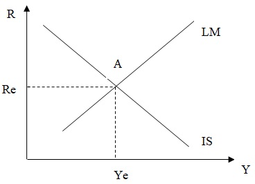

Ни кривая IS, ни кривая LM не определяют сами по себе величину равновесного дохода Yе и равновесной ставки процента Rе. Одновременное равновесие на денежном и товарном рынках существует лишь при единственных значениях уровня дохода (Yе) и ставки процента (Rе). Другие величины ставки процента и уровня дохода означают неравновесие на одном или обоих рынках. Например, при ставке процента R1 равновесие на денежном рынке установится при уровне дохода Y1 (пересечение линии R1 с кривой LM), но на товарном рынке при такой ставке процента равновесие существует при уровне дохода У2 (пересечение линии R1 с кривой IS).
Равновесное положение обоих рынков может быть определено совместным решением уравнений кривых IS и LM

Величину равновесного дохода Yе, соответствующую одновременному равновесию товарного и денежного рынков (а, следовательно, и рынка ценных бумаг, т.е. финансового рынка в целом) Кейнс назвал «величиной эффективного спроса».
Что бы определить как изменение факторов влияет установление совместного равновесия на товарном и денежном рынках выполните упражнение 10.3.